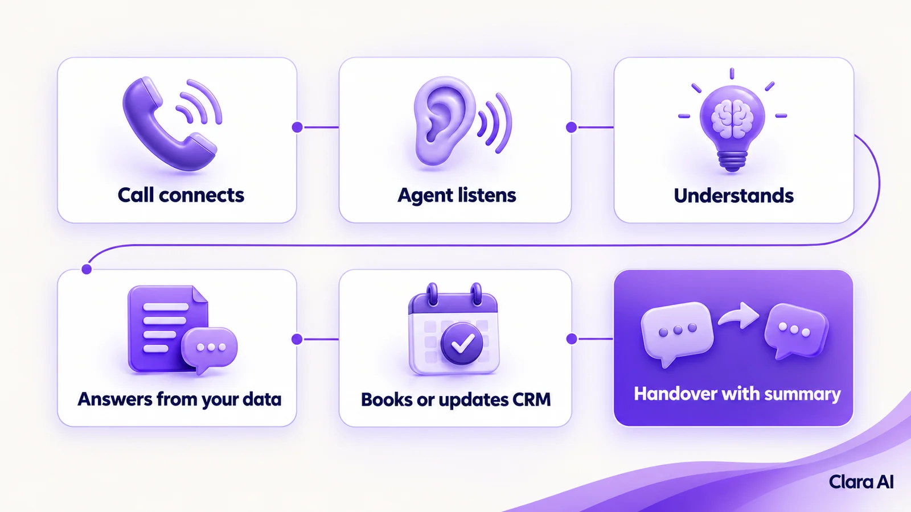
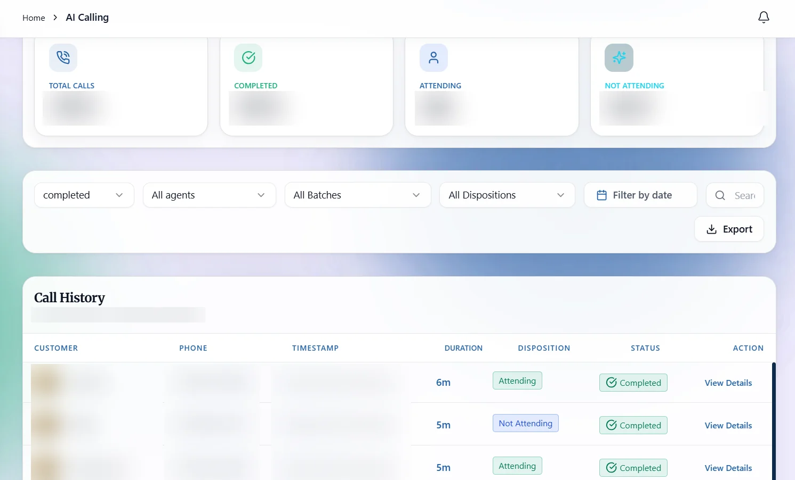
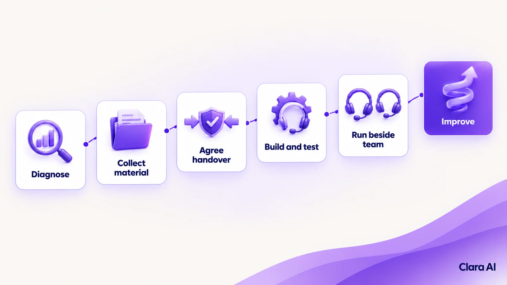

An AI calling agent is software that makes and takes phone calls in natural spoken language. It listens, understands what the caller wants, answers from your company's own information, books appointments or updates your CRM, and hands over to a person with the full context when a call needs one.
It is 6 pm on a Tuesday in Toronto. A dental clinic has closed, but the phone keeps ringing. One caller wants to move an appointment. Another asks whether the clinic accepts her insurance. Both reach voicemail. An AI calling agent would have rebooked the first and logged the second for the front desk.
The steps are the same whether the agent answers or dials.


An IVR makes callers press keys to move through fixed menus. A human-only team can handle anything, but only within staffing hours. An AI calling agent talks naturally at any hour and passes difficult calls to people.
| IVR phone menu | AI calling agent | Human-only team | |
|---|---|---|---|
| How the caller speaks | Presses keys or says fixed words | Speaks naturally | Speaks naturally |
| Hours | Always on | Always on | Staffing hours |
| Unexpected questions | Cannot handle them | Handles them within approved information | Handles them |
| Takes action (book, update CRM) | Limited | Yes, through connected systems | Yes, by hand |
| Sensitive or complex calls | Sends to a queue | Hands over with a call summary | Handles directly |
| Best at | Routing calls | Routine calls and follow-up | Judgement and negotiation |
The three work well together. The agent takes routine calls, and people take the rest.
Clara AI has built calling agents for Rustomjee (a presales voice agent), Hiranandani Parks and The Hindu. Rustomjee and Hiranandani Parks are real estate developers in India, and The Hindu is one of India's best-known newspapers. You can see more of our client work.
The agent handles routine calls. People handle the rest:
Your team also reviews call transcripts. Where the agent struggled, the script or source information is corrected.
Outbound calls need proper consent from the person being called, and they must follow local calling rules. In the USA, the FCC has confirmed that calls made with AI-generated voices count as "artificial" under the TCPA. In Canada, telemarketers must follow the CRTC's telemarketing rules and the National Do Not Call List. Requirements can vary by state, province and type of call, and recordings may need consent too.
We design calling agents for people who have enquired and shared their number. The agent says it is an automated assistant. Please check your own calling plans with a legal adviser.
Clara AI's calling agents and chatbots work in English and Hindi. The same approved information can sit behind an AI web chatbot on your website, so a visitor who types and a customer who calls reach one assistant.
An operations intelligence dashboard can show calls answered, handovers and follow-up times, so you can see where the process breaks down.

Clara AI builds AI calling agents in six steps.